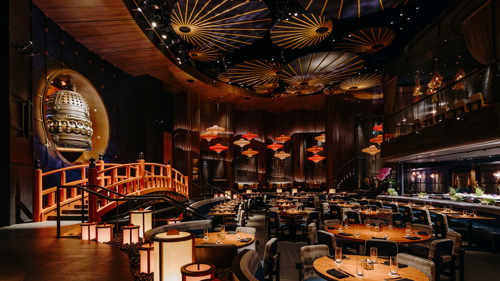
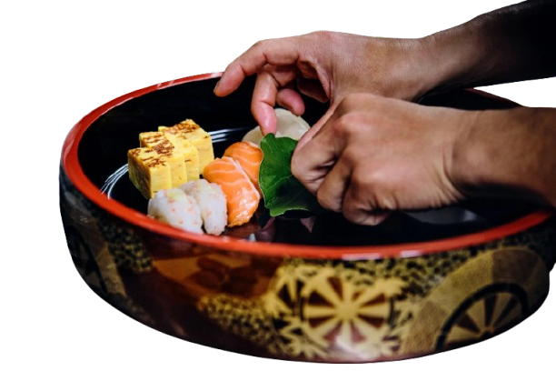
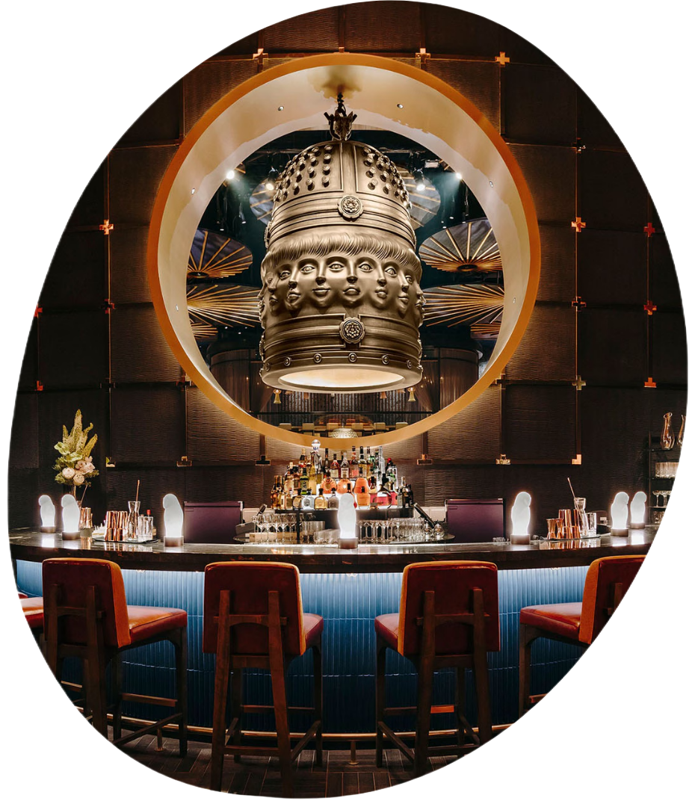

El Arte de la Cocina Japonesa
Inspirados por la elegancia y la tradición de la alta gastronomía japonesa, concebimos cada experiencia como una expresión de equilibrio, precisión y respeto por los ingredientes. Nuestra filosofía se fundamenta en la búsqueda constante de la excelencia, donde cada plato refleja la armonía entre la técnica, la estacionalidad y la creatividad contemporánea. Seleccionamos cuidadosamente ingredientes frescos y de la más alta calidad para honrar los sabores auténticos de Japón, preservando su esencia mientras incorporamos un enfoque moderno y sofisticado. Desde la delicadeza de cada corte hasta la presentación de cada creación, cada detalle ha sido pensado para despertar los sentidos y transmitir la belleza de la simplicidad.

Hacer reservación
Para grupos grandes (6 o más personas), realiza tu reserva por WhatsApp al 8858-2222. Para eventos por favor completá este formulario y nos comunicaremos con usted
Viajá a Japón sin salir de Costa Rica
Sucursales:
- Avenida Escazú, San Rafael de Escazú, San José, Costa Rica
- Barrio Escalante, San José, Costa Rica

Platillos destacados

Dragon Roll Premium
Delicado rollo de camarón tempura y aguacate, coronado con finas láminas de aguacate, anguila glaseada y nuestra exclusiva salsa unagi. Una combinación de texturas crujientes y sabores intensos que hacen honor a uno de los clásicos de la cocina japonesa.

Ōtoro Sashimi
Exquisitos cortes de atún graso de la más alta calidad, cuidadosamente seleccionados por su suavidad y sabor intenso. Servidos con wasabi fresco, jengibre encurtido y salsa de soya premium para resaltar su pureza.

Wagyu Nigiri A5
Nigiri elaborado con carne Wagyu A5 ligeramente flameada, acompañado de arroz sazonado y un delicado toque de sal marina y cebollín. Una experiencia de lujo que se deshace en el paladar.

Salmon Truffle Roll
Rollo de salmón fresco, queso crema y aguacate, terminado con aceite de trufa negra, cebollín y semillas de sésamo tostadas. Una fusión elegante entre la tradición japonesa y la alta cocina contemporánea.

Hamachi Carpaccio
Finas láminas de hamachi (pez limón) servidas con ponzu cítrico, aceite de sésamo, cebollino y microbrotes frescos. Un plato ligero y refinado que resalta la frescura del pescado.

Omakase Signature
Una exclusiva selección del chef que reúne los mejores nigiris, sashimis y makis preparados con ingredientes de temporada. Cada creación es única y refleja la creatividad y precisión de nuestra cocina.
Reviews
"Una experiencia excepcional de principio a fin. La frescura del sushi y la delicadeza de cada presentación reflejan el cuidado y la pasión del chef. Sin duda, uno de los mejores restaurantes japoneses que he visitado."
"El ambiente es sofisticado y acogedor, perfecto para una ocasión especial. Probé el Dragon Roll Premium y el Wagyu Nigiri A5, y ambos superaron mis expectativas. El servicio fue impecable y muy atento a cada detalle."
"Cada plato es una verdadera obra de arte. La combinación de sabores, la calidad de los ingredientes y la atención personalizada hicieron que nuestra cena fuera inolvidable. Definitivamente volveremos para seguir descubriendo nuevas creaciones del chef."